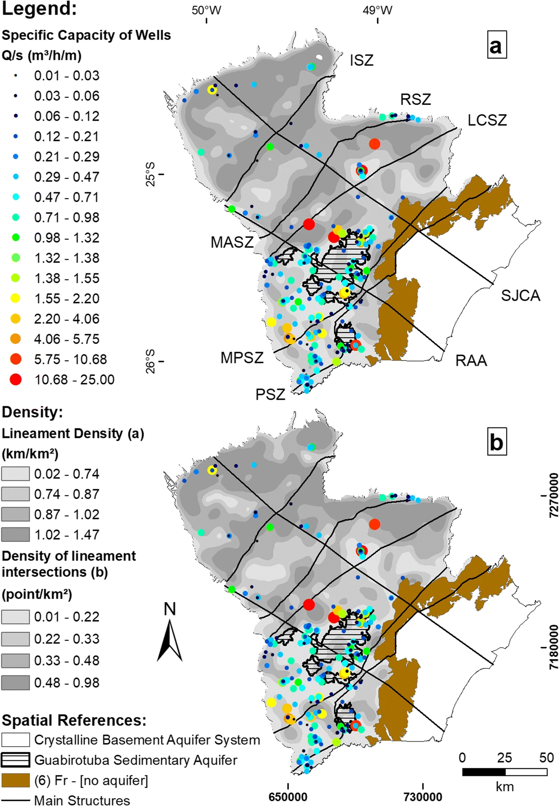

Litho-structural conditioning in the exploration of fractured aquifers: a case study in the Crystalline Basement Aquifer System of Brazil

Resumo em Português
Regiões produtivas no Sistema Aquífero do Embasamento Cristalino (SAEC) no estado do Paraná, Brasil, foram identificadas qualitativa e quantitativamente por meio da correlação espacial de poços e condições geológicas, como lineamentos, hidrografia, aeromagnetometria e litologia. Diferentes métodos aplicados em aquíferos metamórficos e ígneos Pré-Cambrianos em todo o mundo e em alguns estados brasileiros foram integrados e aplicados no SAEC com o objetivo de compreender a melhor escala e abordagem para a produtividade. A produtividade mediana dos 224 poços analisados é de 0,29 m³/h/m.Sob uma avaliação regional multiescala, os resultados mostraram que a melhor condição está associada à distância de 350 m dos lineamentos (1:100.000), especialmente aqueles com direções N40W, N10E e N70E. Considerando as unidades hidro-litológicas, os gnaisses são os mais produtivos, especialmente onde os lineamentos coincidem com estruturas regionais como zonas de cisalhamento, foliações e reativações tectônicas Cenozoicas. Quartzitos, granitoides, xistos, filitos e riolitos também foram favoráveis quando próximos a rios importantes e não necessariamente coincidindo com lineamentos regionais, alta densidade de lineamentos ou fraturas verticais. As áreas de intersecção dos lineamentos com o manto de intemperismo não serviram como parâmetro discriminatório. Como as profundidades medianas dos poços atingem 90 m a partir da superfície, a extração de gradientes magnéticos orientados referentes a fontes magnéticas até 800 m de profundidade corroborou lineamentos mapeados em superfície e novas estruturas não aflorantes. Considerando a complexidade do ambiente e o uso global de águas subterrâneas de aquíferos fraturados, este trabalho contribuiu discriminando parâmetros geoespaciais para diminuir o risco exploratório no SAEC.